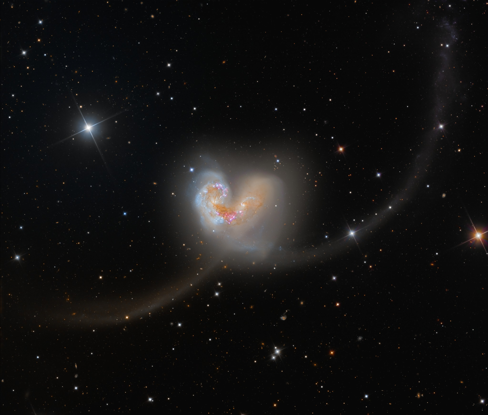

Mundos Diferentes
A gente vive em mundos bem diferentes: eu escrevendo códigos e você interpretando leis. Dois mundos que, na teoria, não tinham nada a ver, mas que na prática se encaixaram perfeitamente. Quem diria que um programador e uma advogada poderiam se conectar tanto?
nossa história
Desde 10 de Abril
O dia em que tudo mudou.
Cada memória aqui é um pedaço do que
construímos juntos.

Porks, 10 de abril
Ainda bem que eu fui 💛
O Primeiro Sim
A seu convite, nossa primeira saída fora do trabalho, logo em um bar de rock, o nosso primeiro beijo, e uma conversa na praça às 4 da manhã. Foi o dia em que tudo começou.
Vôlei e Pastel
No dia seguinte, fomos para o vôlei da firma. Depois do vôlei, um pastel e um açaí. Já estávamos combinando o próximo encontro antes de terminar esse.

Comendo pastel juntos
Esse networking rendeu 🏐

Cinema
Nós estávamos bem nervosos
Devoradores de Estrela
Nosso primeiro cinema juntos. Você estava linda como sempre.
A Praça de Madrugada
Saímos do cinema e nenhum dos dois quis ir embora. Acabamos em uma praça, conversando por horas, com trabalho no dia seguinte — e não nos importamos nem um pouco.

Praça, depois do cinema
Ainda lembro daquele milk-shake 🍦
Não temos nenhuma foto desse dia — mas ele ficou pra sempre marcado em nossa memória. Depois da viagem para Goiânia, ficamos só ouvindo música, conversando, presentes... Foi um dia definitivo para a gente.
O Pagode
Você conhecia todas as músicas, todas as coreografias. Eu só conseguia olhar sem acreditar que essa pessoa existia.

Pagode juntos
Essa ainda foi pro CF...

Em casa
Minha foto favorita nossa. 📸
Em Casa
Depois do pagode, fomos à sua casa. Conheci a Elisângela, sua mãe — e o Tobias, o cachorrinho da Eloísa.
De Volta ao Porks
Ao final de um dia que parecia valer por vários, voltamos ao Porks. Foi onde tiramos essa foto — uma das suas favoritas.

De volta ao Porks
Te ouvir cantar todas as músicas de rock logo depois do pagode foi surreal.

Domingo juntos
Viveria todos os dias assim, facilmente.
Domingo em Família
Você me chamou para almoçar. Cozinhamos juntos e passamos o dia inteiro assistindo filmes e séries. Um domingo simples e absolutamente perfeito.
Casa Vêneto
Um date romântico em um restaurante italiano. A comida, a luz, o ambiente — tudo estava perfeito. Especialmente a companhia.

Restaurante italiano
🤌🤌🤌

No carro
Minha foto favorita sua 🤍
Sem Querer Ir Embora
Saímos do restaurante e nenhum dos dois quis partir. Ficamos no carro, novamente com músicas e conversas... Nesse dia, eu eu tirei essa foto. É a minha favorita sua.
De Moto à Noite
No mesmo dia, ainda nos recusando ir embora, demos uma volta de moto sem rumo pela noite. Acabamos visitando um de nossos sonhos juntos.

Vista bela
Um dia moraremos por aqui

Nosso trabalho
Você ainda tá me devendo um passeio de moto, com você dirigindo...
De Volta ao Início
No mesmo passeio de moto, visitamos onde tudo começou: nosso trabalho. Onde nos olhamos pela primeira vez. Foi o dia em que tiramos essa foto icônica.
Rios de Sangue
A intenção era assistir o filme, mas na prática, só atrapalhamos o outro casal da sessão, de tanto falar. Nesse dia, mais cedo, você me convidou para ir a Barreiras conhecer sua cidade e sua família, uma ideia ambiciosa.

Cinema em casa
Filme nota zero, mas valeu a pena

O desabafo da Larissa
Todo mundo te ama. Com razão 🤍
Burger King
Saímos para comer no BK e você ficou vários minutos ao telefone com a sua família e com a Larissa. Eu fiquei só ouvindo — e percebi o quão querida você é por todo mundo.
Não tiramos fotos, mas nesse dia, você veio à minha casa pela primeira vez — e foi a primeira pessoa a entrar assim. Conheceu minha família. Todos te adoraram. Como não poderia ser diferente.

Preparativos
Te ver feliz nesse dia foi muito contagiante
A Viagem Se Aproxima
Fomos ao shopping fazer as compras para a viagem. Tirei essa foto enquanto te esperava provar os vestidos.
A Viagem
Chegamos a Goiânia e passamos algumas horas no shopping esperando. Foi quando pegamos a Pantera Cor-de-Rosa, de primeira!!!

Shopping GYN
A sobrinha daquela senhora provavelmente continua sem um ursinho até hoje

No ônibus
Só faltou não existir aquela divisória no meio dos assentos
No Onibus
Já no ônibus, a caminho de Barreiras Bahia. Essa foi nossa primeira foto postada publicamente — juntos e felizes, sem precisar esconder mais nada.
Chácara Neves
Chegamos em Barreiras, e já fomos conhecer a famosa Chácara Neves. Conheci várias pessoas bem queridas da sua família.

Chácara Neves
Enfim, em Barreiras 🌿

Rio Grande
Agora também faz parte da minha história
Rio Grande
Ainda na chácara, você me levou para tomar banho (rs) no Rio Grande. Foi incrível ver pessoalmente um lugar que eu ouvi tantas histórias.
Pagode em Barreiras
À noite, fomos a um pagode para conhecer a cultura de Barreiras. Já com uma expectativa bem alta.

Pagode em Barreiras
Tive que colocar essa também...

Ela, no pagode
Você tá absurdamente linda nessa foto 🤍
Ela Tem o Dendê
No pagode, vi que você sabe cada letra, cada passo, cada coreografia. Te ver feliz, em casa e sambando foi uma das coisas mais lindas que já presenciei.
Seu Aniversário
De volta à chácara para celebrar. Você estava radiante, atenciosa com todos e linda em cada detalhe. Nesse dia ficou claro que todos te amam, e com razão.

Comemoração de Aniversário
Aconteceu TANTA coisa nesse dia...

Com os padrinhos
Uma família maravilhosa, assim como você 🤍
Conhecendo a Família
Em seu aniversário, conheci sua família — pessoas incríveis que levarei comigo no coração.
Cuidando da Beleza
O dia de ir embora chegava. Até te esperar foi especial, simplesmente porque eu estava presente.

Progressiva
Índia seus cabeloss

Despedida
Bela foto, né?
Despedida da Chácara
Esse foi o instante de nossa despedida da Chácara Neves. Sabíamos que sentiríamos saudades, e sentimos muito.
Tchau, Barreiras
Chegava a hora de ir embora. Um final de semana curto demais, mas que sempre será nossa primeira viagem juntos, e será inesquecível.

A saída
Até breve, Barreiras 👋
Ainda na estrada, comemoramos enfim seu verdadeiro aniversário. Em toda aquela correria de chegar, trabalhar e sair, eu pude estar ao lado da pessoa mais incrível do mundo no dia mais especial do ano dela, em todos os momentos.
De Volta à Rotina
Voltamos à rotina, mas juntos, transformados, sabendo que agora temos um ao outro sempre que precisarmos. E isso é muito gratificante.

No trabalho
Tenho muita sorte em poder compartilhar todos os dias com você 🤍
10 de Abril de 2026
Escrito nas Estrelas
Justamente no nosso dia,
o universo escolheu postar isto na APOD da NASA
duas galáxias colidindo, a 60 milhões de anos-luz,
formando a silhueta de um coração.

Mais um sinal do universo...
Uma música inesquecível
Que louco eu seria de perder você?
Sem o seu carinho eu não sou ninguém
Você me faz tão bem, você me faz tão bem
Feliz 1 mês, meu amor
Que seja apenas o primeiro de uma vida inteira.